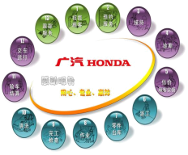
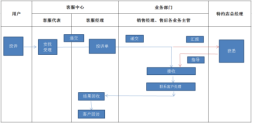
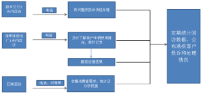

Evaluation Only. Created with Aspose.Words. Copyright 2003-2017 Aspose Pty Ltd.
一、客户接待
（一）适用岗位:接待(问询)岗位
（二）工作流程:
（三）具体要求：
1.明确岗位职责，规范接待流程，遵守接待礼仪，使用文明用语，为客户提供专业的汽车消费咨询和导购服务
2.接待客户电话或微信咨询时，快捷解答客户的问题，对无法解答的问题及时转交其他部门、其他岗位人员回答，接待到店客户时，或直接跟进、 或根据客户的实际需求，将其传介绍其销售顾问。
3.不能出现客户到店无人接待，客户资讯时无人解答的现象，
4.对于普通消费者难以理解的汽车行业参数及专业术语，应耐心给予解释，必要时可结合实物进行解释说明.
二、销售导购
（一）适用岗位:销售岗位
（二）工作流程:
（三）具体要求：
1.推销环节：充分了解客户需求，就本品牌车辆配置、性能、价格及购车相关优惠方案、金融方案、付款流程、保修条款和增值服务等方面向客户进行介绍，不误导，不哄骗，不欺诈消费，不弄虚作假，为客户作出消费决策提供优质服务。
2签单付款：向客户解释购车合同条款，尤其是对所购车辆的型号、款式、价格和交付日期等关键内容，以及办理购车贷款、车辆保险和机动车登记等服务的细节，要作反复说明，保障消费者的知情权，确保客户在签署购车合同等法律文件前充分理解有关内容，明确知悉自己的法律权利和责任、义务，重要内容要在合同中清晰载明，需消费者确认的要由消费者签署确认，避免出现不必要的纠纷。
3.车辆交付前准备：按照购车合同约定进行车辆交付前准备，包括陪同客户选车、确认、协助办理车辆贷款，办理登记上牌，对承诺消费者赠送和加装的设备和物品要100%兑现承诺。客户选定购买的车辆后，未经客户允许不得擅自使用该车辆，获得客户允许使用车辆的，不得使用该车辆作与履行本消费合同无关之用途。
4.喜悦交车：协助客户验收车辆，了解车辆各项功能的操作、保修范围、保养时间等售后服务事宜，提供正规发票、保修手册、使用说明书等手续。
三、保养维修
（一）适用岗位：维保岗位
（二）工作流程：（流程图）

(三)具体要求：
1、规范维修保养服务作业流程，明确服务顾问、维修技师、维修班组长和技术主管等相关人员岗位职责，严格把守汽车保养和维修质量关，从根本上保障汽车安全运行。
2、严格遵守国家关于机动车维修汽车行业管理规范和厂家相关规定，在维修保养岗位人员的技术资格和技术水平严格要求并审核，并定期组织相关岗位人员进行专业的技能水平和职业道德，服务意识水平的培训，提高维修技术人员的专业技能和职业操守，为客户提供优质的维修保养服务，以提高客户的满意度。
3、服务顾问在接待流程中，首先应关注客户的需求，向客户详细了解车辆状态，陪同客户一起环车检查，如实记录客户所映的问题在问诊单上并复述不添加不遗漏，服务顾问应根据客户所反映的问题适当地给予维修保养建议，并说明维修保养的项目的重要性以及必要性。并与客户确认维修保养项目跟费用并逐项说明，确认维修保养时间，确认无误后客户签名确认方可进行维修保养作业。
4、车间技师在接到作业卡指示单后对车辆进行维修保养作业检查，确认故障点，维修项目，有针对性地进行作业。在维修保养过程中如发现车辆存在其它故障点，需要维修增项的，应填写维修报价单，在报价单上备注清楚哪些是必需维修的项目，哪些是建议的项目并由仓库人员进行维修零件报价，由班组长签名确认后通知服务顾问与客户进行沟通。必要时可引导并陪同客户到车辆进行车辆故障位置确认，待客户与重新建议项目方案进行确认后才可以进行增项目维修作业。对于不在店等侯的客户可通过电话（带录音）、信息或微信等方式进行增加项目和时间进行确认，同意维修的方可再次施工，对于客户不予维修处理的项目服务顾问应备注清楚并邀请客户在确认单上签名。对于客户同意维修的项目出现所需零件缺货的情况下服务顾问应签好订件单通知仓库计划员进行零件订货，并承诺到货第一时间通知客户。
5、客户在维修保养过程中如自带使用非原厂的零件，服务顾问需第一时间告知客户自带的非原厂的零件与原厂零件的区别，质保区别及潜在的风险的承担。
6、作业完工后维修技师对客户所反映的故障点进行再次确认是否排查，检查维修保养效果项目是否全部完成，检查无误后在维修作业卡上签名确认，然后将车辆进行清洗下线。
7、车辆清洗完工后由质检员对作业卡维修项目进行检查，对于质检不合格车辆进行返工处理，并及时通知服务顾问及时与客户进行沟通，对于确认维修保养效果无误后在质检终检签名，并交付车辆给服务顾问。
8、结算交车时服务顾问应陪同客户去确认车辆维修保养效果，并出示更换下来的旧件，说明质保，对于维修保养项目及费用逐项说明确认无误邀请客户签名并结算交车送行。
四、咨询投诉
（一）适用岗位：客服岗位
（二）工作流程：（流程图）

注：
一、客服下发的抱怨单范围：
1.厂家下发的投诉
2.新车回访时客户抱怨
3.售后回访时客户抱怨
4.客户来电反映时抱怨
二、 2日内处理完毕的抱怨单（必须在24小时内响应，48小时内处理完成）
1.反馈抱怨表格给客户部汇总
2.客服回访客户，满意或审核
三、2日内未处理对的抱怨单
1.升级未“升级投诉”
2.告知总经理或业务经理处理
3.客服进行回访，确认问题处理情况及满意度
（三）具体要求：
1、加强对售后服务人员的培训,建立客户服务档案,健全投诉处理机制,明确投诉处理责任人以及处理权限、流程、时限等,对客户的咨询和投诉做到及时处理,及时回复,及时汇总反馈。
2、实施投诉分类分级管理机制,正确判断客户投诉类型和紧急程度,分析客户投诉的产生原因,制定具有针对性的解决方案,确保问题在最短时间内得到有效解决。能当天解决的问题不能拖延到第二天;因岗位权限制约无法解决的,马上向上一级管理人员报告寻求协助;在48小时内未能解决的投诉,上报部门主管采取应对措施。
3、客户关系管理部对投诉产生的原因、解决方案进行总结分析,及时向有关情况向公司决策层及相关部门主管进行反馈,并有针对性地提出整改建议,推动公司经营运行水平的整体提高。
4、严格按照《消费者权益保护法》等法律法规的要求,自觉履行经营者责任义务,着力营造安全放心的消费环境,依托消费维权站及时妥善解决消费纠纷,加强消费投诉数据监测分析,不断提升服务效率和服务质量。
五、评价反馈
（一）适用岗位：客服岗位
（二）工作流程：（流程图）

（三）具体要求：
1、建立客户回访机制,销售顾问在在车辆交付使用后3天内进行电话回访,服务顾问在顾客车轮保养维修出厂后2天内进行电话回访,及时了解客户车辆使用情况及建议、意见。在回访过程中做好详细记录,对客户的建议和意见做好跟踪处理。
2、在目常采取电话回访、客户满意度问卷调查等多种方式,收集消费者的需求及意见,客户关系管理部定期统计、分析相关数据,及时向公司决策层和有关部门主管反馈有关信息,为公司经营发展决策提供参考。
3、推行消费者投诉信息公示制度,按月、按季、按年进行周期统计,公开通报客户投诉和处理情况,按照奖优罚劣的原则对有关责任部门、责任人采取相应的处理措施,强化内内部监督,激励员工优化管理和严格自律,减少客户投诉,保护消费者合法权益。